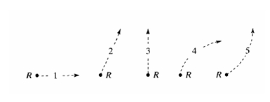

Uma nave espacial deriva lateralmente no espaço sideral do ponto P ao ponto Q, como mostrado abaixo.
A nave espacial não está sujeita a forças externas.
Começando na posição Q, o motor da nave espacial é ligado e produz um impulso constante (força na nave espacial) perpendicular à linha PQ.
O impulso constante é mantido até que a nave espacial alcance um ponto R no espaço.
No ponto R, o motor da nave espacial é desligado e o impulso imediatamente cai para zero. Qual dos caminhos 1-5 a nave espacial seguirá além do ponto R?
